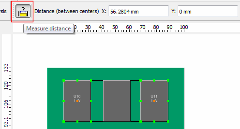
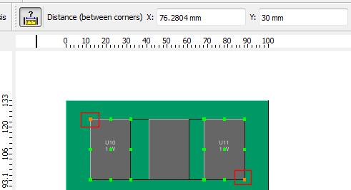
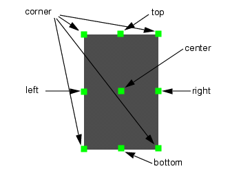

Use the distance
measurement tool to display the distance between two selected objects.
Procedure
- Click the Measure
Distance button, see Figure 1.
Figure 1. Measure Distance Button
In Figure 1 the centers are selected,
the other reference points (green) are selectable. The description
text indicates that the distance is between centers.
Note: As an
alternative you can select or right-click one
of the selected objects in the data tree and select Measure,
however, these operations only change the measurement tool from
center selection to point selection mode. The Measure
Distance button toggles between these two modes.
- Click on any of the other
points, for example, see Figure 2.
Figure 2. Measured Distance
Between Object Corners
The distance figures are updated
and the description shows that the distance is between corners.
The names of the reference
points are shown in Figure 3.
Figure 3. Object Reference Points